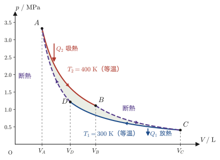
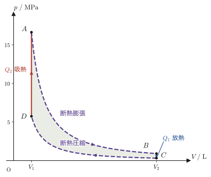
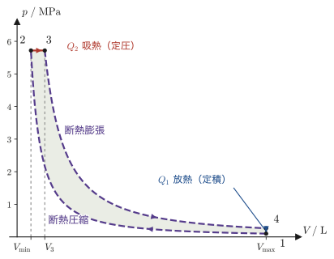

第28章カルノー・サイクルと熱機関の効率
蒸気機関やガソリンエンジンのような「熱機関」（熱を仕事に変える装置）は，与えられた燃料からできるだけ多くの仕事を取り出したい．では，熱を仕事に変える効率には，理論上どこまでも高くできる余地があるのだろうか，それとも何か避けられない上限があるのだろうか．この問いに厳密に答えたのが，フランスの技師サディ・カルノー（Sadi Carnot）が1824年に考えた，理想化された熱機関の循環過程——カルノー・サイクル（Carnot cycle）である．
高校物理では，熱機関の熱効率が「吸収した熱のうち，外にした仕事になった割合」で定義されることを習ったはずである．本書では外にした仕事を $W'$ と書くので，吸収した熱を $Q_2$ として $\eta=W'/Q_2$ となる．本章では，等温変化と断熱変化だけを組み合わせた最も単純なサイクルであるカルノー・サイクルについて，その効率が驚くほど単純な形 $\eta=1-T_1/T_2$（$T_1,T_2$ は低温・高温熱源の絶対温度）になることを，理想気体を作業物質とする具体的な計算によって一行も飛ばさずに確認する．さらに，「なぜこの効率が，作業物質の種類によらず，しかも他のどんな熱機関でも超えられないのか」（カルノーの定理）を，熱力学第2法則から証明する．熱力学第2法則についても，トムソンの原理とクラウジウスの原理という2つの標準的な言い方を示し，両者が論理的に同値であることを証明する．最後に，実際の自動車エンジンに近いオットー・サイクルとディーゼル・サイクル，カルノー・サイクルを逆回転させたときの姿である冷凍機・ヒートポンプについても学ぶ．
- 熱力学第2法則の2つの標準的な表現（トムソン＝ケルビンの原理，クラウジウスの原理）と，両者が論理的に同値であることの証明
- カルノー・サイクルを構成する4つの準静的過程（等温膨張・断熱膨張・等温圧縮・断熱圧縮）と，熱効率 $\eta=W'/Q_2=1-Q_1/Q_2$ の定義
- 可逆過程だからこそ可能な「逆回転カルノー・サイクル」と，カルノーの定理（可逆機関の効率は最大であり，作業物質によらない）の証明
- 理想気体を作業物質とするカルノー・サイクルについて，$V_B/V_A=V_C/V_D$，$W'=nR(T_2-T_1)\ln(V_B/V_A)$，$\eta=1-T_1/T_2$ を，ポアソンの公式を使って完全に導出する計算
- オットー・サイクルとディーゼル・サイクルの熱効率の導出，および冷凍機・ヒートポンプの成績係数（COP）
もとにしたノート：望月泰英『物理学ノート 熱力学』 pp. 41–44．
28.1 熱力学第2法則の2つの表現とその同値性
第23章の法則23.3では，熱力学第2法則を「クラウジウスの原理」と「トムソンの原理」の2通りの言い方で紹介し，両者が同じ内容を述べていることの証明を本節に回した．そこで，証明に使う言葉（熱源・熱機関・冷凍機）をまず整理し，そのあとで2つの原理をあらためて述べて，同値であることを証明する．
28.1.1 熱源と熱機関
熱源（heat reservoir）とは，熱を出し入れしても温度が変わらないとみなせるほど大きな物体である（第23章 23.8節で出てきた恒温槽と同じ考え方で，海や大気，火力発電所のボイラーなどを思い浮かべるとよい）．温度が高いほうを高温熱源（温度 $T_2$），低いほうを低温熱源（温度 $T_1$，$T_1\lt T_2$）と呼ぶ．
熱機関（heat engine）とは，作業物質（シリンダー内の気体など）にサイクル（変化を重ねて最後にもとの状態に戻る過程）を繰り返させながら，高温熱源から熱 $Q_2$ を吸収し，その一部を仕事 $W'$ として外部に取り出し，残りの熱 $Q_1$ を低温熱源へ捨てる装置である（図28.1）．反対に，外部から仕事 $W_{\mathrm{in}}$ をされて，低温熱源から熱 $Q_1$ を吸収し，高温熱源へ熱 $Q_2=Q_1+W_{\mathrm{in}}$ を放出する装置を冷凍機（refrigerator）という（28.8節で詳しく学ぶ）．
なお，熱の出入りの向きをすべて反対にして，もとの状態にもどせる過程を可逆（reversible）な過程という（28.3節で詳しく学ぶ）．本節の証明で使う熱機関・冷凍機は，ふつうのもの（可逆でなくてもよい）でかまわない．
28.1.2 2つの原理
熱力学第2法則には，19世紀の半ばに提案された，見かけの異なる標準的な言い方が2通りある．ひとつは，ウィリアム・トムソン（William Thomson，のちのケルビン卿 Lord Kelvin）による次の原理であり，もうひとつは，ルドルフ・クラウジウス（Rudolf Clausius）による原理である．
法則28.1 トムソン（ケルビン）の原理
ただ1つの熱源から熱を吸収し，それを全て仕事に変えて外部に取り出す，という以外に何の変化も残さないような過程（サイクルを1周してもとの状態に戻る装置）は存在しない．
「ただ1つの熱源」というのが要点である．たとえば理想気体の等温膨張（第27章 27.1節）では，熱源から吸収した熱をすべて仕事に変えることができる（$\Delta U=0$ なので $Q=W'$）．しかし，これは装置が「サイクルを1周してもとの状態に戻る」わけではない——気体の体積が $V_1$ から $V_2$ に変化したままであり，同じ操作を繰り返すには外部から仕事をして気体を $V_1$ へ押し戻す必要がある．トムソンの原理が禁じているのは，あくまで「サイクルを繰り返しながら，熱源1つだけから吸熱してそれを永久に仕事に変え続ける装置」である．エネルギーを無からつくり出す装置を第一種永久機関といい，第1法則に反する．これに対し，第1法則には反しないが第2法則に反する上のような装置を第二種永久機関という．
法則28.2 クラウジウスの原理
低温の物体から高温の物体へ熱が移る，という以外に何の変化も残さないような過程は存在しない．
クラウジウスの原理も「ひとりでに（他に何の変化も残さずに）」という限定が本質的である．冷蔵庫やエアコンは，まさに低温側から高温側へ熱を移す装置であるが，そのためには外部から電気エネルギー（仕事）を供給し続けなければならない——「仕事の供給」という別の変化を残すので，クラウジウスの原理には反しない（28.8節で詳しく学ぶ）．
28.1.3 同値性の証明
証明では，複数の装置を組み合わせたとき，熱源ごとに熱がどれだけ出入りするかを足し合わせて追いかける（図28.3）．
証明：トムソンの原理とクラウジウスの原理は同値である
2つの原理が論理的に同値である，すなわち「一方が成り立たなければ他方も成り立たない」ことを，背理法で両方向とも示す．どちらの議論でも，高温熱源（温度 $T_2$）と低温熱源（温度 $T_1$，$T_1\lt T_2$）の2つの熱源だけを使う．
(a) トムソンの原理が破れるなら，クラウジウスの原理も破れる． トムソンの原理に反する装置 $\mathrm K$（単一の高温熱源 $T_2$ から熱 $Q$ を吸収し，他に何の変化も残さずそれを全て仕事 $W'=Q$ に変える）が存在すると仮定する．この仕事 $W'$ を使って，別の冷凍機 $\mathrm R$ を動かす（図28.3 (a)）．冷凍機 $\mathrm R$ は，外部から仕事 $W_{\mathrm{in}}$ を受け取ると，低温熱源 $T_1$ から熱 $Q_1$ を吸収し，高温熱源 $T_2$ へ熱 $Q_1+W_{\mathrm{in}}$ を放出する（サイクル1周で $\Delta U=0$ というエネルギー保存則の結果である）．$\mathrm K$ が出した仕事をそっくり $\mathrm R$ が受け取るように $\mathrm R$ の運転規模を選んでおく（$W_{\mathrm{in}}=W'$）．
$\mathrm K$ と $\mathrm R$ を合わせた装置全体の収支を，熱源ごとに数える．高温熱源は，$\mathrm K$ に熱 $Q$ を奪われ，$\mathrm R$ から熱 $Q_1+W'$ を受け取るので，$W'=Q$ を使うと，正味で $-Q+(Q_1+W')=Q_1$ だけの熱を受け取る．低温熱源は，$\mathrm R$ に熱 $Q_1$ を奪われる．仕事は，$\mathrm K$ が出した $W'$ をそのまま $\mathrm R$ が使うので，外部との出入りは正味 $0$ である．まとめると，合わせた装置全体は，仕事の出入りが正味 $0$ のまま，低温熱源 $T_1$ から熱 $Q_1$ を奪い，高温熱源 $T_2$ に熱 $Q_1$ を渡したことになる．これはまさにクラウジウスの原理が禁じる過程（仕事の供給なしに熱が低温から高温へ移る）そのものであり，クラウジウスの原理が破れたことになる．
(b) クラウジウスの原理が破れるなら，トムソンの原理も破れる． クラウジウスの原理に反する装置 $\mathrm C$（仕事の供給なしに，低温熱源 $T_1$ から高温熱源 $T_2$ へ熱 $Q$ をひとりでに移す）が存在すると仮定する．これと組み合わせて，ふつうの熱機関 $\mathrm R'$ を，高温熱源 $T_2$ から熱 $Q_2'$ を吸収し，仕事 $W'$ をし，低温熱源 $T_1$ へ熱 $Q_1'=Q_2'-W'$ を放出するように動かす（図28.3 (b)）．$\mathrm R'$ の運転規模（1サイクルあたりの量）は自由に選べるので，低温熱源に放出する熱がちょうど $Q_1'=Q$（$\mathrm C$ が低温熱源から奪う熱と同じ量）になるように選んでおく．
合わせた装置全体の収支を，熱源ごとに数える．低温熱源は，$\mathrm C$ に熱 $Q$ を奪われ，$\mathrm R'$ から熱 $Q_1'=Q$ を受け取るので，正味では $0$——低温熱源は結局何も変化しない．高温熱源は，$\mathrm C$ から熱 $Q$ を受け取り，$\mathrm R'$ に熱 $Q_2'$ を奪われるので，正味で熱
$$ Q_2'-Q=Q_2'-Q_1'=W' $$を失う．すなわち，装置全体から見れば，高温熱源から熱 $W'$ を吸収したことになる．まとめると，合わせた装置全体は，低温熱源には何の変化も残さず，高温熱源1つだけから熱 $W'$ を吸収し，それを全て仕事 $W'$ に変えたことになる．これはまさにトムソンの原理が禁じる過程（単一熱源からの吸熱をすべて仕事に変える）そのものであり，トムソンの原理が破れたことになる．
(a)(b) はそれぞれ「トムソンの原理が破れる $\Rightarrow$ クラウジウスの原理が破れる」「クラウジウスの原理が破れる $\Rightarrow$ トムソンの原理が破れる」を示している．これらの対偶をとると，「クラウジウスの原理が成り立つ $\Rightarrow$ トムソンの原理が成り立つ」「トムソンの原理が成り立つ $\Rightarrow$ クラウジウスの原理が成り立つ」となり，両方合わせて2つの原理は互いに他方を導く——すなわち論理的に同値であることが示された．
（証明終わり）
定理28.1 熱力学第2法則の2つの表現の同値性
トムソン（ケルビン）の原理（法則28.1）とクラウジウスの原理（法則28.2）は，論理的に同値である．すなわち，一方を仮定すれば他方を証明でき，どちらを熱力学第2法則の出発点として採用しても，導かれる結論（同じ帰結）は変わらない．
イメージ：なぜ「同じ内容」なのに2通りの言い方が要るのか
トムソンの原理は「熱機関」（熱源から仕事を取り出す装置）に注目した言い方であり，クラウジウスの原理は「冷凍機」（熱を低温から高温へ運ぶ装置）に注目した言い方である．どちらも一見すると別々の日常経験（「摩擦熱は仕事に戻せない」「冷蔵庫は電気を使わないと動かない」）から来ているように見えるが，証明で見たとおり，一方を破る装置があれば，それを部品として使ってもう一方を破る装置を組み立てられてしまう．つまり，自然界がどちらか一方の「都合の良い抜け道」も許していないという，1つの深い制限を，異なる角度から述べたものが2つの原理なのである．28.4節で証明するカルノーの定理は，この制限から直接導かれる帰結である．
例題28.1 永久機関のうわさを検証する
ある発明家が「海水（温度一定の巨大な熱源とみなせる）から熱を吸収し，それを全て船のエンジンの動力に変える装置を発明した．燃料は一切不要で，海水の温度がわずかに下がる以外，何の変化も残さない」と主張している．この主張は熱力学第2法則に照らして実現可能か，判定せよ．
解答 この装置は，海水というただ1つの熱源から熱を吸収し，それを全て仕事（動力）に変換し，他には何の変化も残さない（もう一方の低温熱源へ熱を捨てる過程が無い）．これはまさに法則28.1（トムソンの原理）が禁じる過程そのものであり，熱力学第2法則に反する．したがって，この装置は実現不可能である（このような，見かけ上はエネルギー保存則（第1法則）に反していないが第2法則に反する架空の装置は，第二種永久機関と呼ばれる）．海水から熱を取り出して仕事に変えること自体は原理的に可能だが，そのためには必ずもう1つ，より低温の熱源（海水よりさらに冷たい場所）が必要であり，そちらへ一部の熱を捨てなければならない——これが，28.2節以降で学ぶカルノー・サイクルの構造である．
28.2 カルノー・サイクルの4つの過程
カルノー・サイクル（Carnot cycle，カルノー・エンジンとも呼ばれる）は，熱機関の循環過程（サイクル）の中でもっとも単純で理想化されたものであり，第27章で学んだ「等温変化」と「断熱変化」という2種類の準静的変化だけを組み合わせて作られる．作業物質（シリンダー内に閉じ込められた気体など，実際に膨張・圧縮される物質）を，状態 $A\to B\to C\to D\to A$ の順に変化させて，もとの状態 $A$ に戻すサイクルであり，次の4つの過程からなる（図28.4）．
- $A\to B$：等温膨張
- $B\to C$：断熱膨張
- $C\to D$：等温圧縮
- $D\to A$：断熱圧縮
すなわち，等温変化（$A\to B$，$C\to D$）と断熱変化（$B\to C$，$D\to A$）が交互に1回ずつ現れる．以下，4つの過程を順に見ていく（シリンダーとピストンで表すと図28.5のようになる）．
注意：等温変化と断熱変化を取り違えない
$A\to B$ と $C\to D$ は等温変化である．作業物質を熱源に接触させたまま，温度を一定に保って熱を出し入れする．$B\to C$ と $D\to A$ は断熱変化である．作業物質を熱源から離して，熱の出入りを $0$ にする（温度は変わる）．$p\text{-}V$ 図では，同じ点から出る断熱線のほうが等温線より傾きが急である（断熱変化の $pV^\gamma=$一定 は，等温変化の $pV=$一定 よりも，体積が増えるときに圧力が急に下がる形をしている）．
28.2.1 [1] 等温膨張 $A\to B$
作業物質を温度 $T_2$ の高温の熱源（高温熱源）に接触させ，等温的に膨張させる．接触させたまま準静的に（十分ゆっくり）膨張させるので，作業物質の温度は常に熱源の温度 $T_2$ に保たれる．このとき，作業物質は高温熱源から熱量 $Q_2$ を吸収する．
28.2.2 [2] 準静的断熱膨張 $B\to C$
作業物質を高温熱源から離し，断熱的に（熱の出入りなしに）膨張させて，作業物質の圧力を下げる．断熱変化でも気体は膨張するとエネルギー（内部エネルギー）を失うので，温度も下がる．この過程で，作業物質の温度は高温熱源の温度 $T_2$ から，次に接触する低温熱源の温度 $T_1$ まで下がる．
28.2.3 [3] 等温圧縮 $C\to D$
作業物質を温度 $T_1$（$T_1\lt T_2$）の低温の熱源（低温熱源）に接触させ，低圧力の状態で等温的に圧縮する．このとき，作業物質は低温熱源に熱量 $Q_1$ を放出する．
28.2.4 [4] 準静的断熱圧縮 $D\to A$
作業物質を低温熱源から離し，断熱的に圧縮させて，はじめの状態 $A$ に戻す．断熱圧縮では気体はエネルギーを受け取るので温度が上がり，ちょうど $A$ の温度 $T_2$ に戻ったところでサイクルが1周完成する．
この1周のサイクルに，熱力学第1法則 $\Delta U=Q-W'$（第23章 23.4節）を当てはめてみよう．1サイクルで作業物質が受け取る正味の熱は，高温熱源から吸収した $Q_2$ から，低温熱源へ放出した $Q_1$ を差し引いた $Q=Q_2-Q_1$ である．一方，$A$ から出発して1周し，ちょうど $A$ に戻ってくるので，内部エネルギーは状態量（状態だけで決まる量）であることから，変化量は
$$ \Delta U=0 $$である（$A$ の内部エネルギーから $A$ の内部エネルギーを引けば当然 $0$ になる——これが「1周してもとに戻る」というサイクルの本質である）．これらを第1法則に代入すると，
\begin{equation} \Delta U=Q-W'=(Q_2-Q_1)-W'=0 \label{eq:28-cycle-energy} \end{equation}となる．したがって，このサイクル全体で作業物質が外部にする仕事 $W'$（1サイクルあたり，正味の出力）は，
\begin{equation} W'=Q_2-Q_1 \label{eq:28-cycle-work} \end{equation}である．高温熱源から吸収した熱の一部（$Q_1$）を低温熱源に「捨て」，残りの差額（$Q_2-Q_1$）だけを仕事として取り出す——これがカルノー・サイクル（および，一般に熱機関）の基本構造である（図28.6）．
例題28.2 1サイクルあたりの仕事
あるカルノー・サイクルが1サイクルで高温熱源から $Q_2=840\ \mathrm{J}$ の熱を吸収し，低温熱源へ $Q_1=520\ \mathrm{J}$ の熱を放出した．このサイクルが1周で外部にする仕事 $W'$ を求めよ．
解答 式 \eqref{eq:28-cycle-work} より，
$$ W'=Q_2-Q_1=840-520=320\ \mathrm{J} $$である．
28.3 熱効率と逆回転カルノー・サイクル
熱機関の性能は，「高温熱源から吸収した熱のうち，どれだけの割合を仕事として取り出せたか」という比で測るのが自然である．この比を熱効率（thermal efficiency）と呼ぶ．
定義28.1 熱効率
熱機関の熱効率 $\eta$（イータ，ギリシャ文字）を，
\begin{equation} \eta\equiv\frac{(\text{外に対してする仕事})}{(\text{吸収する熱量})}=\frac{W'}{Q_2} \label{eq:28-eta-def} \end{equation}と定義する．
28.2節で見たとおり，カルノー・サイクルの1周に熱力学第1法則を当てはめると $\Delta U=Q-W'=(Q_2-Q_1)-W'=0$（式 \eqref{eq:28-cycle-energy}，$A$ に戻るので $\Delta U=0$）となり，$W'=Q_2-Q_1$（式 \eqref{eq:28-cycle-work}）であった．これを定義28.1の式 \eqref{eq:28-eta-def} に代入すると，
$$ \eta=\frac{W'}{Q_2}=\frac{Q_2-Q_1}{Q_2} $$すなわち，
\begin{equation} \eta=1-\frac{Q_1}{Q_2} \label{eq:28-eta-q} \end{equation}が得られる．熱を全く低温熱源に捨てずに済めば（$Q_1=0$ にできれば）$\eta=1$（効率100%）になるはずだが，28.1節のトムソンの原理は，まさにこの $Q_1=0$（単一熱源からの吸熱を全て仕事に変える）を禁じている．したがって，カルノー・サイクルに限らずあらゆる熱機関で $Q_1\gt0$ が必要であり，$\eta\lt1$ とならざるを得ない．
28.3.1 逆回転カルノー・サイクル
カルノー・サイクルを構成する4つの過程（等温膨張・断熱膨張・等温圧縮・断熱圧縮）は，どれも「十分ゆっくり，準静的に」行うという条件で定義されていた．さらに，摩擦などによるエネルギーの散逸はなく，熱の授受は，作業物質が熱源と等しい温度のときに（温度差が限りなく小さい状態で）行うものとする．準静的で，摩擦などの散逸がなく，熱の授受を熱源との温度差なしに行う過程は可逆過程（reversible process，外部に痕跡を残さずに逆向きにたどり直せる過程）である（準静的であることは可逆であるための必要条件だが，それだけでは十分でない．第27章 27.1節の可逆膨張も参照）．カルノー・サイクルの4過程はすべてこの条件を満たすので，サイクル全体もまた可逆であり，全く同じ経路を逆向き（$A\to D\to C\to B\to A$）にたどることができる（図28.7）．
イメージ：逆回転で何が入れ替わるか
逆回転カルノー・サイクルでは，熱と仕事の出入りがすべて向きを反転する．順回転では高温熱源から $Q_2$ を吸収し，低温熱源へ $Q_1$ を放出し，外部に仕事 $W'=Q_2-Q_1$ をしていた．逆回転では，同じ大きさの $Q_1$ を低温熱源から吸収し，同じ大きさの $Q_2$ を高温熱源へ放出し，外部から仕事 $W'$（大きさは同じ，向きが逆）をされる．これはまさに，低温側から高温側へ熱を汲み上げる働きであり，仕事の供給を伴っているので28.1節のクラウジウスの原理には反しない．この「逆回転カルノー・サイクル」が，冷凍機やエアコン，ヒートポンプの理論上もっとも効率の良いモデルになる（28.8節で成績係数を計算する）．
例題28.3 熱効率から熱量の比を求める
あるカルノー・サイクルの熱効率が $\eta=0.35$ であった．このサイクルが高温熱源から $Q_2=2.0\times10^{3}\ \mathrm{J}$ を吸収するとき，低温熱源へ放出する熱量 $Q_1$ と，外部にする仕事 $W'$ を求めよ．
解答 式 \eqref{eq:28-eta-q} $\eta=1-Q_1/Q_2$ を $Q_1$ について解くと，$Q_1=(1-\eta)Q_2$ である．数値を代入すると，
$$ Q_1=(1-0.35)\times2.0\times10^{3}=0.65\times2.0\times10^{3}=1.3\times10^{3}\ \mathrm{J} $$仕事は，定義28.1（$\eta=W'/Q_2$）より $W'=\eta Q_2$，あるいは式 \eqref{eq:28-cycle-work}（$W'=Q_2-Q_1$）から，
$$ W'=\eta Q_2=0.35\times2.0\times10^{3}=7.0\times10^{2}\ \mathrm{J} $$（検算として $Q_2-Q_1=2.0\times10^{3}-1.3\times10^{3}=7.0\times10^{2}\ \mathrm{J}$ となり一致する）．
28.4 カルノーの定理 — 可逆機関の効率は最大であり作業物質によらない
28.5節では，作業物質を理想気体に限定して，カルノー・サイクルの熱効率が $\eta=1-T_1/T_2$（$T_1,T_2$ は低温熱源・高温熱源の絶対温度）という具体的な形になることを計算する．ここで自然にわく疑問が2つある．(1) 作業物質を理想気体以外の物質（実在気体，液体，固体なんでもよい）に変えても，同じ2つの熱源 $T_1,T_2$ の間で働く可逆な熱機関の効率は，やはり同じ値になるのだろうか．(2) そもそも，可逆機関よりも効率の高い熱機関（不可逆なものを含む）を作ることはできないのだろうか．この2つの問いに同時に答えるのが，カルノー自身が示した次の定理である．証明で組み合わせる装置を図28.8に示す．
証明：カルノーの定理
同じ高温熱源 $T_2$ と低温熱源 $T_1$（$T_1\lt T_2$）の間で働く，任意の熱機関 $\mathrm X$（可逆でも不可逆でもよい）と，同じ2つの熱源の間で働く可逆な熱機関 $\mathrm R$（たとえばカルノー・サイクル．理想気体のカルノー・サイクルの熱効率 $\eta_{\mathrm R}=1-T_1/T_2\gt0$ は28.5節で具体的に計算する）を考える．どちらも，正の仕事を外部にする熱機関とする．$\mathrm X$ の熱効率を $\eta_{\mathrm X}$，$\mathrm R$ の熱効率を $\eta_{\mathrm R}$ とする．
まず，$\eta_{\mathrm X}\gt\eta_{\mathrm R}$ と仮定して矛盾を導く（背理法）．$\mathrm X$ を1サイクル動かし，高温熱源から $Q_{2\mathrm X}$ を吸収して仕事 $W'$（$=\eta_{\mathrm X}Q_{2\mathrm X}$）を外部に取り出し，低温熱源へ $Q_{1\mathrm X}=Q_{2\mathrm X}-W'$ を放出する．この仕事 $W'$ を，そっくりそのまま $\mathrm R$ を逆回転させる（28.3節）ために使う．$\mathrm R$ は可逆なので，逆回転させれば，仕事 $W'$ を投入することで低温熱源から $Q_{1\mathrm R}$ を吸収し，高温熱源へ $Q_{2\mathrm R}=Q_{1\mathrm R}+W'$ を放出する（$\mathrm R$ を正回転させたときの熱効率の定義 $\eta_{\mathrm R}=W'/Q_{2\mathrm R}$ の関係が，逆回転でも熱と仕事の大きさの対応としてそのまま成り立つ——可逆というのは，同じ経路を逆にたどるだけで，出入りする熱・仕事の大きさは変わらず向きだけが反転する，という意味である）．$\mathrm R$ の運転規模は自由に選べるので，$\mathrm R$ が1サイクルで受け取る仕事がちょうど $\mathrm X$ の出力 $W'$ に一致するように選んでおく．
$\mathrm X$（順回転）と $\mathrm R$（逆回転）を組み合わせた装置全体について，外部とやりとりする仕事は，$\mathrm X$ が出す $W'$ を $\mathrm R$ がそのまま消費するので，正味 $0$ である．高温熱源の収支は，$\mathrm X$ が $Q_{2\mathrm X}$ を吸収し，$\mathrm R$ が $Q_{2\mathrm R}$ を放出するので，高温熱源は正味
$$ Q_{2\mathrm R}-Q_{2\mathrm X} $$だけ熱を受け取る．低温熱源の収支は，$\mathrm X$ が $Q_{1\mathrm X}$ を放出し，$\mathrm R$ が $Q_{1\mathrm R}$ を吸収するので，低温熱源は正味 $Q_{1\mathrm R}-Q_{1\mathrm X}$ だけ熱を失う．仕事の出入りが正味 $0$（外部とのエネルギーのやりとりなし）である以上，合わせた装置全体でエネルギー保存則（第1法則）を満たすには，高温熱源が受け取った熱と低温熱源が失った熱が等しくなければならない：$Q_{2\mathrm R}-Q_{2\mathrm X}=Q_{1\mathrm R}-Q_{1\mathrm X}$（これは，$Q_{2\mathrm X}-Q_{1\mathrm X}=W'=Q_{2\mathrm R}-Q_{1\mathrm R}$ という各機関自身の第1法則からも直接確かめられる）．
ここで，仮定 $\eta_{\mathrm X}\gt\eta_{\mathrm R}$ と，$\mathrm X,\mathrm R$ が同じ仕事 $W'$ を出す（あるいは受け取る）ことから，$W'=\eta_{\mathrm X}Q_{2\mathrm X}=\eta_{\mathrm R}Q_{2\mathrm R}$ なので，
$$ Q_{2\mathrm X}=\frac{W'}{\eta_{\mathrm X}},\qquad Q_{2\mathrm R}=\frac{W'}{\eta_{\mathrm R}} $$であり，$\eta_{\mathrm X}\gt\eta_{\mathrm R}\gt0$ より $1/\eta_{\mathrm X}\lt1/\eta_{\mathrm R}$，したがって
$$ Q_{2\mathrm X}\lt Q_{2\mathrm R}\qquad\therefore\ Q_{2\mathrm R}-Q_{2\mathrm X}\gt0 $$となる．つまり，組み合わせた装置全体は，外部との仕事のやりとりが正味 $0$ のまま，低温熱源から熱 $Q_{2\mathrm R}-Q_{2\mathrm X}\,(\gt0)$ を奪い，高温熱源へ同じ量の熱を渡す——これはまさに28.1節のクラウジウスの原理が禁じる過程そのものであり，矛盾である．したがって，仮定 $\eta_{\mathrm X}\gt\eta_{\mathrm R}$ は誤りであり，
\begin{equation} \eta_{\mathrm X}\le\eta_{\mathrm R} \label{eq:28-carnot-bound} \end{equation}が任意の熱機関 $\mathrm X$ について成り立つ．
さらに，$\mathrm X$ 自身も可逆機関であるとしよう．このときは，上とまったく同じ議論を $\mathrm X$ と $\mathrm R$ の役割を入れ替えて行うことができる（$\mathrm X$ が可逆であることを使って，今度は $\mathrm X$ を逆回転させ，$\mathrm R$ を正回転させる）．同じ手順により $\eta_{\mathrm R}\le\eta_{\mathrm X}$ も成り立つことが示される．式 \eqref{eq:28-carnot-bound} と合わせると，$\mathrm X,\mathrm R$ がともに可逆機関であれば，
$$ \eta_{\mathrm X}=\eta_{\mathrm R} $$でなければならない．すなわち，同じ2つの熱源の間で働く可逆な熱機関はすべて，作業物質の種類（気体か液体か，理想気体かどうか）によらず，全く同じ熱効率をもつ．
（証明終わり）
定理28.2 カルノーの定理
同じ高温熱源 $T_2$ と低温熱源 $T_1$（$T_1\lt T_2$）の間で働く熱機関について，次が成り立つ．
(i) 同じ2つの熱源の間で働くどんな熱機関の熱効率 $\eta_{\mathrm X}$ も，可逆な熱機関の熱効率 $\eta_{\mathrm R}$ を超えることはない：$\eta_{\mathrm X}\le\eta_{\mathrm R}$．
(ii) 同じ2つの熱源の間で働く可逆な熱機関の熱効率は，作業物質の種類によらず，すべて等しい．
イメージ：カルノーの定理が保証すること
カルノーの定理は，「熱源の温度 $T_1,T_2$ さえ決まれば，理論上の最高効率は作業物質やエンジンの設計の工夫によらず一意に決まってしまう」という，強力で少し意外な結論を保証している．エンジニアがどれほど巧妙な設計をしても，可逆機関（摩擦や急激な変化による損失が一切ない，理想的な限界）の効率を超えることは決してできない．逆に言えば，可逆機関の効率さえ計算できれば，それがどんな作業物質についても——理想気体だろうと，水蒸気だろうと——2つの熱源の間で実現可能な効率の理論的な上限を与えることになる．28.5節では，計算がもっとも簡単な理想気体を作業物質に選んで，この普遍的な効率を具体的に $1-T_1/T_2$ の形に決定する．
考察：カルノーの定理と温度の決め方（熱力学的温度）
定理28.2 (ii) により，2つの熱源の間で働く可逆機関の効率は，作業物質によらず，2つの熱源だけで決まる．ということは，可逆機関の効率 $\eta=1-Q_1/Q_2$ を測れば，2つの熱源の温度の比 $T_1/T_2=Q_1/Q_2=1-\eta$ を，どんな物質の性質にも頼らずに決められる．これがケルビンの考えた熱力学的温度（thermodynamic temperature）である．28.5節では，理想気体の状態方程式で定義した温度 $T$ を使って理想気体のカルノー・サイクルの効率が $\eta=1-T_1/T_2$ となることを計算する．この結果は，理想気体の温度が，作業物質によらない熱力学的温度と（比例定数を除いて）一致していることを示している．
例題28.4 発明家の主張とカルノーの定理
ある発明家が，温度 $500\ \mathrm{K}$ の高温熱源と温度 $300\ \mathrm{K}$ の低温熱源の間で働く新型熱機関を開発し，「熱効率 $55\,\%$ を達成した」と発表した．この主張は物理的に可能か，判定せよ（28.5節の結果 $\eta_{\mathrm{Carnot}}=1-T_1/T_2$ を先取りして用いてよい）．
解答 同じ2つの熱源（$T_2=500\ \mathrm{K}$，$T_1=300\ \mathrm{K}$）の間で働く可逆な熱機関（カルノー・サイクル）の熱効率は，28.5節で示すとおり，
$$ \eta_{\mathrm{Carnot}}=1-\frac{T_1}{T_2}=1-\frac{300}{500}=1-0.60=0.40=40\,\% $$である．定理28.2 (i) より，同じ2つの熱源の間で働くどんな熱機関の効率も，この可逆機関の効率 $40\,\%$ を超えることはできない．発明家の主張する $55\,\%$ は，この理論的な上限 $40\,\%$ を超えているので，熱力学第2法則（カルノーの定理）に反しており，実現不可能と判定できる．（このように，カルノー効率は実在の熱機関の性能を評価するときの絶対的な「物差し」として使われる）．
28.5 理想気体のカルノー・サイクル — 熱効率 $\eta=1-T_1/T_2$ の導出
28.4節のカルノーの定理により，可逆な熱機関の効率は作業物質によらず1つに決まることがわかった．そこで，計算がもっとも簡単な理想気体を作業物質としてカルノー・サイクルを実際に動かし，その効率を具体的な形で求めてみよう．
例28.1 理想気体のカルノー・サイクル
$n\ \mathrm{mol}$ の理想気体を作業物質とする，28.2節のカルノー・サイクル $A\to B\to C\to D\to A$（図28.9）を考える．$A\to B$，$C\to D$ は温度 $T_2,\,T_1$（$T_1\lt T_2$）での等温変化，$B\to C$，$D\to A$ は断熱変化である．次を示せ．
(i) $\dfrac{V_B}{V_A}=\dfrac{V_C}{V_D}$
(ii) このサイクルが外部にする仕事は $W'=nR(T_2-T_1)\ln\dfrac{V_B}{V_A}$
(iii) 熱効率は $\eta=1-\dfrac{T_1}{T_2}$

解答 (i)：$V_B/V_A=V_C/V_D$ の証明
$B\to C$ と $D\to A$ は理想気体の断熱変化なので，ポアソンの公式（第27章 27.3節）$TV^{\gamma-1}=(\text{一定})$（$\gamma=C_p/C_V$ は比熱比，第27章 27.5節）が適用できる．$B\to C$ の始点・終点，$D\to A$ の始点・終点にそれぞれ適用すると，
$$ T_2V_B^{\,\gamma-1}=T_1V_C^{\,\gamma-1}\qquad(B\to C),\qquad\qquad T_1V_D^{\,\gamma-1}=T_2V_A^{\,\gamma-1}\qquad(D\to A) $$となる．1つ目の式の両辺を $T_1V_B^{\,\gamma-1}$ で割ると，
$$ \frac{T_2}{T_1}=\left(\frac{V_C}{V_B}\right)^{\gamma-1} $$2つ目の式の両辺を $T_2V_D^{\,\gamma-1}$ で割ると，
$$ \frac{T_1}{T_2}=\left(\frac{V_A}{V_D}\right)^{\gamma-1}\qquad\therefore\ \frac{T_2}{T_1}=\left(\frac{V_D}{V_A}\right)^{\gamma-1} $$（右の式は，左の式の両辺の逆数をとった）．2つの式の左辺はどちらも $T_2/T_1$ で等しいので，右辺どうしも等しい：
$$ \left(\frac{V_C}{V_B}\right)^{\gamma-1}=\left(\frac{V_D}{V_A}\right)^{\gamma-1} $$$\gamma\gt1$（第27章 27.5節よりマイヤーの関係式から $C_p\gt C_V$，したがって $\gamma=C_p/C_V\gt1$）なので指数 $\gamma-1\gt0$ であり，$x\mapsto x^{\gamma-1}$（$x\gt0$）は単調増加関数だから，両辺の底（$V_C/V_B$ と $V_D/V_A$）が等しくなければならない：
$$ \frac{V_C}{V_B}=\frac{V_D}{V_A} $$この両辺に $V_B/V_D$ を掛けて整理すると，
\begin{equation} \frac{V_B}{V_A}=\frac{V_C}{V_D} \label{eq:28-idealgas-ratio} \end{equation}が得られる．
（解答終わり）
解答 (ii)：$W'=nR(T_2-T_1)\ln(V_B/V_A)$ の証明
4つの過程それぞれで作業物質が外部にする仕事 $W'_{AB},W'_{BC},W'_{CD},W'_{DA}$ を求め，合計する．
[1] $A\to B$（等温膨張，温度 $T_2$） 理想気体の等温可逆変化の仕事の公式（第27章 27.1節）を使うと，
$$ W'_{AB}=\int_{V_A}^{V_B}p\,\dd V=\int_{V_A}^{V_B}\frac{nRT_2}{V}\,\dd V=nRT_2\bigl[\ln V\bigr]_{V_A}^{V_B}=nRT_2\ln\frac{V_B}{V_A} $$[2] $B\to C$（断熱膨張） 断熱変化なので $Q_{BC}=0$．熱力学第1法則 $\Delta U_{BC}=Q_{BC}-W'_{BC}$ に代入すると $\Delta U_{BC}=-W'_{BC}$，すなわち $W'_{BC}=-\Delta U_{BC}$．内部エネルギーの変化は，定積熱容量 $C_V$（$n$ mol 分の熱容量，第27章 27.2節）を使って $\Delta U_{BC}=C_V(T_C-T_B)=C_V(T_1-T_2)$（$B$ の温度は $T_2$，$C$ の温度は $T_1$）と書けるから，
$$ W'_{BC}=-C_V(T_1-T_2)=C_V(T_2-T_1) $$[3] $C\to D$（等温圧縮，温度 $T_1$） [1]と同様に，
$$ W'_{CD}=\int_{V_C}^{V_D}p\,\dd V=\int_{V_C}^{V_D}\frac{nRT_1}{V}\,\dd V=nRT_1\ln\frac{V_D}{V_C} $$（圧縮なので $V_D\lt V_C$，したがって $\ln(V_D/V_C)\lt0$ となり $W'_{CD}\lt0$——気体は外部に負の仕事をする，すなわち外部から仕事をされる．符号は正しい．）
[4] $D\to A$（断熱圧縮） [2]と同様に，$Q_{DA}=0$ より $W'_{DA}=-\Delta U_{DA}=-C_V(T_A-T_D)=-C_V(T_2-T_1)$（$D$ の温度は $T_1$，$A$ の温度は $T_2$）．
以上の4つを合計すると，
$$ W'=W'_{AB}+W'_{BC}+W'_{CD}+W'_{DA} =nRT_2\ln\frac{V_B}{V_A}+\underbrace{C_V(T_2-T_1)}_{[2]}+nRT_1\ln\frac{V_D}{V_C}\underbrace{-C_V(T_2-T_1)}_{[4]} $$[2]と[4]の $C_V(T_2-T_1)$ の項は符号が逆で完全に打ち消し合う（断熱過程どうしの内部エネルギー変化がちょうど相殺する，というのが計算の山場である）．残るのは，
$$ W'=nRT_2\ln\frac{V_B}{V_A}+nRT_1\ln\frac{V_D}{V_C} $$ここで解答(i)の式 \eqref{eq:28-idealgas-ratio}（$V_B/V_A=V_C/V_D$，したがって逆数をとって $V_D/V_C=V_A/V_B$）を代入すると，
$$ W'=nRT_2\ln\frac{V_B}{V_A}+nRT_1\ln\frac{V_A}{V_B} =nRT_2\ln\frac{V_B}{V_A}-nRT_1\ln\frac{V_B}{V_A} $$（$\ln(V_A/V_B)=\ln\bigl((V_B/V_A)^{-1}\bigr)=-\ln(V_B/V_A)$，対数の性質，高校数学 第6章 6.2節）．$\ln(V_B/V_A)$ でくくると，
\begin{equation} W'=nR(T_2-T_1)\ln\frac{V_B}{V_A} \label{eq:28-idealgas-work} \end{equation}が得られる．
（解答終わり）
解答 (iii)：$\eta=1-T_1/T_2$ の証明
定義28.1（式 \eqref{eq:28-eta-q}）より $\eta=1-Q_1/Q_2$ なので，$\dfrac{Q_1}{Q_2}=\dfrac{T_1}{T_2}$ を示せばよい．
$A\to B$ は等温変化なので $\Delta U_{AB}=0$．熱力学第1法則 $\Delta U_{AB}=Q_2-W'_{AB}=0$（$A\to B$ で吸収する熱が $Q_2$）に，解答(ii)で求めた $W'_{AB}=nRT_2\ln(V_B/V_A)$ を代入すると，
\begin{equation} Q_2=W'_{AB}=nRT_2\ln\frac{V_B}{V_A} \label{eq:28-Q2} \end{equation}また，$C\to D$ は等温変化であり，この過程で作業物質は低温熱源へ熱 $Q_1$ を放出するので，作業物質が受け取る熱は $-Q_1$（$Q_1\gt0$ を放出熱量の大きさとする）と書ける．したがって $\Delta U_{CD}=-Q_1-W'_{CD}=0$ となり，解答(ii)の $W'_{CD}=nRT_1\ln(V_D/V_C)$ を使うと，
$$ Q_1=-W'_{CD}=-nRT_1\ln\frac{V_D}{V_C}=nRT_1\ln\frac{V_C}{V_D} $$ここで解答(i)の式 \eqref{eq:28-idealgas-ratio}（$V_C/V_D=V_B/V_A$）を代入すると，
\begin{equation} Q_1=nRT_1\ln\frac{V_B}{V_A} \label{eq:28-Q1} \end{equation}式 \eqref{eq:28-Q2} と式 \eqref{eq:28-Q1} を比べると，どちらも同じ因子 $nR\ln(V_B/V_A)$ を含んでいるので，これを約分できる：
$$ \frac{Q_1}{Q_2}=\frac{nRT_1\ln\dfrac{V_B}{V_A}}{nRT_2\ln\dfrac{V_B}{V_A}}=\frac{T_1}{T_2} $$これを定義28.1に代入すると，
\begin{equation} \eta=1-\frac{Q_1}{Q_2}=1-\frac{T_1}{T_2} \label{eq:28-eta-carnot} \end{equation}が得られる．
（解答終わり）
考察：$Q_2/T_2-Q_1/T_1=0$ という発見 — エントロピーへの伏線
解答(iii)で得た式 \eqref{eq:28-Q2}，\eqref{eq:28-Q1} を見比べてみよう．一般に，熱量 $Q$ は経路によって値が変わってしまう量であり，状態量（変化のしかたによらず，始状態と終状態だけで決まる量）ではない——実際，1サイクルで $Q_2-Q_1\neq0$（式 \eqref{eq:28-cycle-work} より，これがゼロでないからこそ仕事 $W'$ が取り出せている）．ところが，式 \eqref{eq:28-Q2} を $T_2$ で，式 \eqref{eq:28-Q1} を $T_1$ で割った量を比べると，
$$ \frac{Q_2}{T_2}=nR\ln\frac{V_B}{V_A},\qquad\frac{Q_1}{T_1}=nR\ln\frac{V_B}{V_A} $$となって，両者は完全に等しい：$\dfrac{Q_2}{T_2}-\dfrac{Q_1}{T_1}=0$．$Q$ 自体は状態量でないのに，$Q/T$ という組み合わせにすると，1サイクルでちょうど変化がなくなる——これは，$S\equiv Q/T$ が新しい状態量になりうることを強く示唆している．この量こそエントロピー（entropy）であり，次章（第29章）で本格的に定義し，その性質を調べる．本章では，この一致がなぜ起こるのかという問いをここに残したまま，先へ進む．
定理28.3 カルノー・サイクルの熱効率
高温熱源の温度 $T_2$，低温熱源の温度 $T_1$（$T_1\lt T_2$，ともに絶対温度）の間で働くカルノー・サイクルの熱効率は，
\begin{equation} \eta=1-\frac{T_1}{T_2} \label{eq:28-eta-carnot-thm} \end{equation}である．28.4節のカルノーの定理により，これは同じ2つの熱源の間で働くあらゆる可逆熱機関の熱効率であり，かつ実現可能などんな熱機関の効率もこれを超えることはできない．
例題28.5 理想気体のカルノー・サイクルの数値計算
$n=1.0\ \mathrm{mol}$ の理想気体（$\gamma=C_p/C_V=1.4$）を作業物質とするカルノー・サイクルで，高温熱源の温度 $T_2=400\ \mathrm{K}$，低温熱源の温度 $T_1=300\ \mathrm{K}$，$V_A=1.0\ \mathrm{L}$，$V_B=3.0\ \mathrm{L}$ とする．(1) 解答(i)の関係を使って $V_C,V_D$ を求めよ．(2) 4つの過程それぞれの仕事 $W'_{AB},W'_{BC},W'_{CD},W'_{DA}$ を数値計算し，合計が式 \eqref{eq:28-idealgas-work} に一致することを確認せよ．(3) 熱効率 $\eta$ を2通りの方法（$Q_1,Q_2$ から，および $T_1,T_2$ から）で求め，一致することを確認せよ．
解答 (1) $B\to C$ の断熱変化にポアソンの公式 $T_2V_B^{\gamma-1}=T_1V_C^{\gamma-1}$ を適用すると，
$$ V_C=V_B\left(\frac{T_2}{T_1}\right)^{\frac{1}{\gamma-1}}=3.0\ \mathrm{L}\times\left(\frac{400}{300}\right)^{\frac{1}{0.4}}=3.0\times\left(\frac43\right)^{2.5}\ \mathrm{L}\approx3.0\times2.053\ \mathrm{L}\approx6.16\ \mathrm{L} $$同様に $D\to A$ から $V_D=V_A(T_2/T_1)^{1/(\gamma-1)}\approx1.0\times2.053\ \mathrm{L}\approx2.05\ \mathrm{L}$．検算として $V_B/V_A=3.0/1.0=3.0$，$V_C/V_D\approx6.16/2.05\approx3.0$ となり，解答(i)の関係 $V_B/V_A=V_C/V_D$ が数値的にも確認できる．体積の大小は $V_A=1.0\lt V_D\approx2.05\lt V_B=3.0\lt V_C\approx6.16\ \mathrm{L}$ の順で，図28.9のとおりである．
(2) マイヤーの関係式 $C_p-C_V=nR$（第27章 27.5節）と $\gamma=C_p/C_V$ から $C_V(\gamma-1)=nR$，すなわち $C_V=nR/(\gamma-1)=1.0\times8.314/0.4\approx20.8\ \mathrm{J/K}$ である．これを使うと，
$$ W'_{AB}=nRT_2\ln\frac{V_B}{V_A}=1.0\times8.314\times400\times\ln3.0\approx3.65\times10^{3}\ \mathrm{J} $$ $$ W'_{BC}=C_V(T_2-T_1)=20.8\times(400-300)\approx2.08\times10^{3}\ \mathrm{J} $$ $$ W'_{CD}=nRT_1\ln\frac{V_D}{V_C}=1.0\times8.314\times300\times\ln\frac{2.05}{6.16}\approx-2.74\times10^{3}\ \mathrm{J} $$ $$ W'_{DA}=-C_V(T_2-T_1)\approx-2.08\times10^{3}\ \mathrm{J} $$合計すると $W'\approx(3.65+2.08-2.74-2.08)\times10^{3}\ \mathrm{J}\approx9.1\times10^{2}\ \mathrm{J}$（$W'_{BC}$ と $W'_{DA}$ が打ち消し合うことも数値で確認できる）．一方，式 \eqref{eq:28-idealgas-work} から直接計算すると $W'=nR(T_2-T_1)\ln(V_B/V_A)=1.0\times8.314\times100\times\ln3.0\approx9.13\times10^{2}\ \mathrm{J}$ となり，一致する．
(3) $Q_2=W'_{AB}\approx3.65\times10^{3}\ \mathrm{J}$，$Q_1=-W'_{CD}\approx2.74\times10^{3}\ \mathrm{J}$ なので，$\eta=1-Q_1/Q_2\approx1-2.74/3.65\approx0.25$．一方，$\eta=1-T_1/T_2=1-300/400=1-0.75=0.25$．両者は一致し，$\eta=0.25=25\,\%$ である．なお $Q_2-Q_1\approx(3.65-2.74)\times10^{3}\ \mathrm{J}\approx9.1\times10^{2}\ \mathrm{J}$ は上の $W'$ に等しい（式 \eqref{eq:28-cycle-work}）．
例題28.6 600 Kと300 Kの熱源で働くカルノー・サイクルの効率
高温熱源の温度 $T_2=600\ \mathrm{K}$，低温熱源の温度 $T_1=300\ \mathrm{K}$ の間で働くカルノー・サイクルの熱効率を求めよ．
解答 定理28.3（式 \eqref{eq:28-eta-carnot-thm}）より，
$$ \eta=1-\frac{T_1}{T_2}=1-\frac{300}{600}=1-0.50=0.50=50\,\% $$である．高温熱源の温度がちょうど低温熱源の温度の2倍のとき，カルノー効率は必ず $50\,\%$ になる（$T_1/T_2=1/2$ のときは常にこうなる，$T_2,T_1$ の実際の値にはよらない）．実在の火力発電所の蒸気タービンでは，高温側がおよそ$800\ \mathrm{K}$前後，低温側（復水器）がおよそ$300\ \mathrm{K}$前後であることが多く，この場合のカルノー効率は $1-300/800\approx0.625$（$62.5\,\%$）程度になるが，実際の発電効率はこれより低い（定理28.2 (i) は $\eta_{\mathrm X}\le\eta_{\mathrm R}$ と述べており，摩擦や熱損失のある実際の機関では，実際にこれより小さくなる．不可逆な機関で厳密に小さくなることは，第29章のクラウジウスの不等式から示される）．
28.6 オットー・サイクル — 断熱変化と定積変化によるサイクル
カルノー・サイクルは，理論上の効率の上限を与える理想化されたサイクルだが，実際の自動車のガソリンエンジンは，等温変化ではなく定積変化（体積を一定に保ったまま圧力・温度だけが変わる変化）と断熱変化を組み合わせて動いている．このモデルをオットー・サイクル（Otto cycle，ドイツの技術者ニコラウス・オットー（Nikolaus Otto）にちなむ）と呼ぶ．シリンダー内で混合気（燃料と空気の混合物）を圧縮し，点火して燃焼させ（この燃焼を「外部の高温熱源からの定積的な吸熱」とみなす），膨張して仕事をし，排気して（「外部の低温熱源への定積的な放熱」とみなす），もとの状態に戻る，という4つの過程からなる．
作業物質を $n\ \mathrm{mol}$ の理想気体とし，状態を $A\to B\to C\to D\to A$ の順に変化させる（図28.10）．$A$（体積 $V_1$，温度 $T_A$）と $D$（体積 $V_1$，温度 $T_D$）は同じ体積 $V_1$（圧縮後の小さい体積），$B$（体積 $V_2$，温度 $T_B$）と $C$（体積 $V_2$，温度 $T_C$）は同じ体積 $V_2$（圧縮前の大きい体積，$V_2\gt V_1$）である．すなわち $V_1=V_{\min}$，$V_2=V_{\max}$ であり，圧縮比（compression ratio）を「圧縮前の体積÷圧縮後の体積」$r\equiv V_2/V_1=V_{\max}/V_{\min}\,(\gt1)$ と定義する．4つの過程は次のとおりである．
- $D\to A$：定積的な吸熱（体積 $V_1$ のまま，熱 $Q_2$ を吸収して $T_D\to T_A$ に昇温．実際のエンジンでは燃焼にあたる）
- $A\to B$：断熱膨張（体積 $V_1\to V_2$，仕事を取り出す「膨張行程」）
- $B\to C$：定積的な放熱（体積 $V_2$ のまま，熱 $Q_1$ を放出して $T_B\to T_C$ に降温．実際のエンジンでは排気にあたる）
- $C\to D$：断熱圧縮（体積 $V_2\to V_1$，「圧縮行程」）

例題28.7 オットー・サイクルの熱効率
$n\ \mathrm{mol}$ の理想気体（比熱比 $\gamma=C_p/C_V$）を作業物質とするオットー・サイクルの熱効率が，体積比 $V_1/V_2$（あるいは圧縮比 $r\equiv V_2/V_1$）を使って，
$$ \eta=1-\left(\frac{V_1}{V_2}\right)^{\gamma-1}=1-r^{1-\gamma} $$と書けることを示せ．
解答 $D\to A$ は体積 $V_1$ 一定の定積変化なので仕事は $0$（$\dd V=0$ より $\dd'W'=p\,\dd V=0$）．熱力学第1法則より，吸収する熱はそのまま内部エネルギーの増加になる：
$$ Q_2=\Delta U_{DA}=C_V(T_A-T_D) $$同様に，$B\to C$ も体積 $V_2$ 一定の定積変化で仕事は $0$ なので，放出する熱もそのまま内部エネルギーの減少に等しい：
$$ Q_1=-\Delta U_{BC}=C_V(T_B-T_C) $$（$B\to C$ では温度が下がる，すなわち $\Delta U_{BC}=C_V(T_C-T_B)\lt0$ であり，放出する熱量 $Q_1$ はこの負号を打ち消した正の量 $C_V(T_B-T_C)$ になる）．したがって，熱効率は
\begin{equation} \eta=1-\frac{Q_1}{Q_2}=1-\frac{C_V(T_B-T_C)}{C_V(T_A-T_D)}=1-\frac{T_B-T_C}{T_A-T_D} \label{eq:28-otto-eta-T} \end{equation}となる．ここで，2つの断熱過程にポアソンの公式 $TV^{\gamma-1}=(\text{一定})$（第27章 27.3節）を適用する．$A\to B$（$V_1\to V_2$）について $T_AV_1^{\,\gamma-1}=T_BV_2^{\,\gamma-1}$，すなわち
$$ T_B=T_A\left(\frac{V_1}{V_2}\right)^{\gamma-1} $$$C\to D$（$V_2\to V_1$）について $T_CV_2^{\,\gamma-1}=T_DV_1^{\,\gamma-1}$，すなわち
$$ T_C=T_D\left(\frac{V_1}{V_2}\right)^{\gamma-1} $$となる．どちらも同じ係数 $(V_1/V_2)^{\gamma-1}$ が掛かっていることに注目して，$x\equiv(V_1/V_2)^{\gamma-1}$ とおくと，$T_B=xT_A$，$T_C=xT_D$ なので，
$$ T_B-T_C=xT_A-xT_D=x(T_A-T_D) $$（これは，28.5節の解答(ii)で断熱過程の仕事どうしが打ち消し合ったのと同じ構造——2つの断熱過程が「同じ体積比」を経るために，同じ係数 $x$ でくくれる——である）．これを式 \eqref{eq:28-otto-eta-T} に代入すると，$T_A-T_D$ が約分できて，
$$ \eta=1-\frac{x(T_A-T_D)}{T_A-T_D}=1-x=1-\left(\frac{V_1}{V_2}\right)^{\gamma-1} $$が得られる．$r\equiv V_2/V_1\,(\gt1)$（圧縮比，compression ratio）を使って書き直すと，$(V_1/V_2)^{\gamma-1}=r^{-(\gamma-1)}=r^{1-\gamma}$ なので，
\begin{equation} \eta=1-r^{1-\gamma} \label{eq:28-otto-eta} \end{equation}となる．
（解答終わり）
考察：圧縮比を上げると効率が上がる理由
式 \eqref{eq:28-otto-eta} は，圧縮比 $r$ を大きくするほど（$0\lt r^{1-\gamma}\lt1$ が小さくなるほど）熱効率 $\eta$ が高くなることを示している．これが，ガソリンエンジンの圧縮比を上げる設計（高圧縮エンジン，高オクタン価燃料の使用など）が燃費の向上につながる理由である．ただし，圧縮比を上げすぎると，点火前に混合気が自然発火してしまう「ノッキング」という異常燃焼が起こりやすくなるため，実際の圧縮比には上限がある．なお，式 \eqref{eq:28-otto-eta} はカルノー効率 $\eta=1-T_1/T_2$（式 \eqref{eq:28-eta-carnot-thm}）と形が違い，同じ最高温度 $T_A$・最低温度 $T_C$ の間で働くカルノー・サイクルの効率のほうが高い．その理由は不可逆性ではない（多数の熱源を使って準静的に熱を出し入れする理想化されたオットー・サイクルは可逆である）．吸熱 $D\to A$ は温度が $T_D$ から $T_A$ まで上がりながら，放熱 $B\to C$ は温度が $T_B$ から $T_C$ まで下がりながら行われ，最高温度 $T_A$ の熱源だけから吸熱しているわけではない．熱の大半をより低い温度で受け取るので，効率がカルノー効率より下がるのである．式で確かめると，$x=r^{1-\gamma}$ として $T_C=xT_D\lt xT_A$（$T_D\lt T_A$ より）だから，カルノー効率 $1-T_C/T_A$ は $1-x=\eta_{\text{Otto}}$ より大きい．たとえば $r=8$，$\gamma=1.4$，$T_C=300\ \mathrm{K}$，$T_A=2000\ \mathrm{K}$ なら，カルノー効率は $1-300/2000=0.85$，オットー効率は $1-8^{-0.4}\approx0.565$ である．
例題28.8 ガソリンエンジンの熱効率の見積もり
典型的なガソリンエンジンの圧縮比を $r=8.0$，作業ガスを空気とみなして $\gamma=1.4$（空気標準サイクルという近似）とするとき，オットー・サイクルの熱効率を求めよ．
解答 式 \eqref{eq:28-otto-eta} に数値を代入すると，
$$ \eta=1-r^{1-\gamma}=1-8.0^{1-1.4}=1-8.0^{-0.4} $$$8.0^{-0.4}=e^{-0.4\ln8.0}=e^{-0.4\times2.079}=e^{-0.8318}\approx0.4353$ なので，
$$ \eta\approx1-0.435=0.565=56.5\,\% $$である．実際のガソリンエンジンの熱効率はこれよりかなり低く（おおむね$25$–$35\,\%$程度），摩擦・熱損失・不完全燃焼など，本章の理想化されたモデルには含まれない不可逆性が効いている．
28.7 ディーゼル・サイクル
オットー・サイクル（28.6節）は，圧縮した混合気に点火プラグで着火するガソリンエンジンのモデルだったが，ルドルフ・ディーゼル（Rudolf Diesel）が考案したディーゼルエンジンでは，空気だけを非常に高い圧縮比（オットー・サイクルよりずっと大きい，$r=15$–$25$程度）で圧縮して高温にし，そこに燃料を噴射して自己着火させる．燃焼は瞬間的な定積変化ではなく，燃料が噴射されている間，ピストンがゆっくり押し出されながら進む——これを理想化すると，燃焼過程は定圧変化（圧力を一定に保ったまま体積が変化する変化）とみなせる．このモデルをディーゼル・サイクル（Diesel cycle）と呼ぶ．
$n\ \mathrm{mol}$ の理想気体を作業物質とし，状態を $1\to2\to3\to4\to1$ の順に変化させる（図28.11）．状態1と状態4の体積が最大 $V_{\max}$，状態2の体積が最小 $V_{\min}$ で，状態3の体積を $V_3$ とする．
- $1\to2$：断熱圧縮（体積 $V_{\max}\to V_{\min}$）
- $2\to3$：定圧的な吸熱（圧力一定のまま体積 $V_{\min}\to V_3$，$V_3\gt V_{\min}$．燃料の噴射・燃焼にあたる）
- $3\to4$：断熱膨張（体積 $V_3\to V_4=V_{\max}$，もとの体積まで戻る）
- $4\to1$：定積的な放熱（体積 $V_{\max}$ のまま，排気にあたる）
オットー・サイクルと同じく，圧縮比を「圧縮前の体積÷圧縮後の体積」$r\equiv V_{\max}/V_{\min}$ と定義し，これに加えて締切比（cutoff ratio）$\rho\equiv V_3/V_{\min}\,(\gt1)$（燃料噴射が終わり定圧燃焼が終わる時点で，体積がどれだけ増えたかを表す比）を使うと，この後で求める熱効率をきれいな形で書ける．（注意：28.6節では最小の体積を $V_1$，最大の体積を $V_2$ と書いたが，本節では添字の番号が状態の番号なので，最大・最小の体積を $V_{\max},V_{\min}$ と書く．）

導出：ディーゼル・サイクルの熱効率
$2\to3$ は定圧変化なので，吸収する熱は定圧熱容量 $C_p$（第27章 27.2節）を使って $Q_2=C_p(T_3-T_2)$ と書ける．$4\to1$ は定積変化なので，放出する熱は定積熱容量 $C_V$ を使って $Q_1=C_V(T_4-T_1)$ である．したがって，熱効率は
$$ \eta=1-\frac{Q_1}{Q_2}=1-\frac{C_V(T_4-T_1)}{C_p(T_3-T_2)}=1-\frac{1}{\gamma}\cdot\frac{T_4-T_1}{T_3-T_2} $$（$C_V/C_p=1/\gamma$，第27章 27.5節のマイヤーの関係式より）．あとは，28.5節・28.6節と同じ手法で，$T_2,T_3,T_4$ を $T_1,r,\rho,\gamma$ で表す．断熱変化 $1\to2$ にポアソンの公式を適用すると $T_2=T_1(V_{\max}/V_{\min})^{\gamma-1}=T_1r^{\gamma-1}$．定圧変化 $2\to3$ では理想気体の状態方程式より $V/T$ が一定（$pV=nRT$ で $p$ が一定だから）なので $T_3=T_2(V_3/V_{\min})=T_2\rho=T_1r^{\gamma-1}\rho$．断熱変化 $3\to4$（$V_3\to V_4=V_{\max}$）にポアソンの公式を適用すると，$V_3=\rho V_{\min}=\rho V_{\max}/r$ を使って，
$$ T_4=T_3\left(\frac{V_3}{V_{\max}}\right)^{\gamma-1}=T_3\left(\frac{\rho}{r}\right)^{\gamma-1}=T_1r^{\gamma-1}\rho\cdot\frac{\rho^{\gamma-1}}{r^{\gamma-1}}=T_1\rho^{\gamma} $$（$r^{\gamma-1}$ どうしが約分できた）．これらを使うと，
$$ T_4-T_1=T_1(\rho^{\gamma}-1),\qquad T_3-T_2=T_1r^{\gamma-1}\rho-T_1r^{\gamma-1}=T_1r^{\gamma-1}(\rho-1) $$なので，$T_1$ を約分して，
\begin{equation} \eta=1-\frac{1}{\gamma}\cdot\frac{T_1(\rho^{\gamma}-1)}{T_1r^{\gamma-1}(\rho-1)}=1-\frac{1}{r^{\gamma-1}}\cdot\frac{\rho^{\gamma}-1}{\gamma(\rho-1)} \label{eq:28-diesel-eta} \end{equation}が得られる．
（導出終わり）
定理28.4 ディーゼル・サイクルの熱効率
圧縮比 $r=V_{\max}/V_{\min}$，締切比 $\rho=V_3/V_{\min}$ のディーゼル・サイクルの熱効率は，
$$ \eta=1-\frac{1}{r^{\gamma-1}}\cdot\frac{\rho^{\gamma}-1}{\gamma(\rho-1)} $$である．次の2つが成り立つ．
(i) $\rho\to1$（燃焼が一瞬で終わり，定積燃焼に近づく極限）では，$(\rho^\gamma-1)/(\gamma(\rho-1))\to1$ となり，オットー・サイクルの効率の式 \eqref{eq:28-otto-eta}（$\eta=1-r^{1-\gamma}$）に一致する．
(ii) $\rho\gt1$ のときは $(\rho^\gamma-1)/(\gamma(\rho-1))\gt1$ であり，同じ圧縮比 $r$ で比べると，ディーゼル・サイクルの効率はオットー・サイクルの効率より低い．
証明：定理28.4 の (i) と (ii)
$f(\rho)=\rho^\gamma$ とおくと，$f(1)=1$，$f'(\rho)=\gamma\rho^{\gamma-1}$ なので，$(\rho^\gamma-1)/(\rho-1)=(f(\rho)-f(1))/(\rho-1)$ は $f$ の $\rho=1$ での微分係数 $f'(1)=\gamma$ に $\rho\to1$ で近づく（微分の定義．ロピタルの定理でも同じ）．よって $(\rho^\gamma-1)/(\gamma(\rho-1))\to\gamma/\gamma=1$ であり，(i) が示された．
(ii) は平均値の定理（大学数学 第2章 2.3節）を使う．$\rho\gt1$ のとき，$f(\rho)-f(1)=f'(\xi)(\rho-1)$ となる $\xi$（$1\lt\xi\lt\rho$）がある．すなわち $\rho^\gamma-1=\gamma\xi^{\gamma-1}(\rho-1)$ なので，
$$ \frac{\rho^\gamma-1}{\gamma(\rho-1)}=\xi^{\gamma-1}\gt1 $$（$\xi\gt1$，$\gamma-1\gt0$ より）．したがって，ディーゼル・サイクルの損失の項 $r^{1-\gamma}(\rho^\gamma-1)/(\gamma(\rho-1))$ は，オットー・サイクルの損失の項 $r^{1-\gamma}$ より大きく，$\eta_{\text{Diesel}}\lt\eta_{\text{Otto}}$ が成り立つ．
（証明終わり）
例題28.9 ディーゼルエンジンとガソリンエンジンの効率の比較
あるディーゼルエンジンの圧縮比を $r=18$，締切比を $\rho=2.0$，$\gamma=1.4$（空気標準サイクル）として熱効率を求め，同じ圧縮比 $r=18$ のオットー・サイクルの熱効率と比較せよ．
解答 まず $18^{0.4}=e^{0.4\ln18}=e^{0.4\times2.890}=e^{1.156}\approx3.178$ なので $1/18^{0.4}\approx0.3147$．また $2.0^{1.4}=e^{1.4\ln2.0}=e^{0.9704}\approx2.639$ なので $(2.0^{1.4}-1)/(1.4\times(2.0-1))\approx1.639/1.4\approx1.171$ である．式 \eqref{eq:28-diesel-eta} に代入すると，
$$ \eta_{\text{Diesel}}=1-\frac{1}{18^{0.4}}\cdot\frac{2.0^{1.4}-1}{1.4\times(2.0-1)}\approx1-0.3147\times1.171\approx1-0.3685\approx0.632=63.2\,\% $$一方，式 \eqref{eq:28-otto-eta} で同じ $r=18$ のオットー・サイクルの効率を計算すると，
$$ \eta_{\text{Otto}}=1-18^{-0.4}\approx1-0.3147\approx0.685=68.5\,\% $$となり，同じ圧縮比では，オットー・サイクルのほうがディーゼル・サイクルより効率が高い（定理28.4 (ii) のとおり，$\rho\gt1$ だとディーゼルの効率はオットーより必ず低くなる）．しかし，ディーゼルエンジンは点火プラグによる着火を使わないため，混合気のノッキング（28.6節の考察）を心配せずに，オットー・サイクルよりずっと高い圧縮比（$r=15$–$25$程度）を実現できる．そのため，実際のディーゼルエンジンは，同程度の排気量のガソリンエンジンよりも高い実用燃費（実効率）を達成することが多い．
28.8 冷凍機とヒートポンプの成績係数
28.3節で見た逆回転カルノー・サイクルは，外部から仕事を供給することで，低温熱源（庫内・室外）から熱を汲み上げて高温熱源（外気・室内）へ移す装置だった．同じ装置でも，何に注目するかによって2つの異なる使い方——冷蔵庫・エアコンの「冷房」（低温熱源側，冷やしたい空間から熱を奪うことが目的）と，ヒートポンプ式の暖房（高温熱源側，暖めたい空間へ熱を届けることが目的）——に分けられる．どちらも「仕事1あたり，どれだけ多くの熱を運べたか」という比で性能を評価するが，着目する熱源が違うので，2つの異なる指標を定義する（熱と仕事の流れは図28.12）．
逆回転カルノー・サイクルが1サイクルで消費する仕事（外部から供給される仕事）の大きさを $W_{\mathrm{in}}$ とし，低温熱源（温度 $T_1$）から吸収する熱を $Q_1$，高温熱源（温度 $T_2$）へ放出する熱を $Q_2$ とする．エネルギー保存則（サイクル1周で $\Delta U=0$）より，
\begin{equation} Q_2=Q_1+W_{\mathrm{in}} \label{eq:28-refrig-energy} \end{equation}である（供給された仕事の分だけ，高温熱源へ渡す熱が，低温熱源から奪う熱より多くなる）．
定義28.2 成績係数（COP）
冷凍機（refrigerator）としての性能——仕事 $W_{\mathrm{in}}$ を使って，低温熱源からどれだけ熱を奪えたか——を表す成績係数（coefficient of performance，COP）を，
\begin{equation} \mathrm{COP}_{\mathrm R}\equiv\frac{Q_1}{W_{\mathrm{in}}} \label{eq:28-cop-ref} \end{equation}と定義する．ヒートポンプ（heat pump）としての性能——同じ仕事 $W_{\mathrm{in}}$ を使って，高温熱源へどれだけ熱を届けられたか——を表す成績係数を，
\begin{equation} \mathrm{COP}_{\mathrm{HP}}\equiv\frac{Q_2}{W_{\mathrm{in}}} \label{eq:28-cop-hp} \end{equation}と定義する．式 \eqref{eq:28-refrig-energy} より，$\mathrm{COP}_{\mathrm{HP}}=Q_2/W_{\mathrm{in}}=(Q_1+W_{\mathrm{in}})/W_{\mathrm{in}}=\mathrm{COP}_{\mathrm R}+1$ という関係がある．
注意：COPは1より大きくなってよい（熱効率 $\eta$ とは違う）
28.3節の熱効率 $\eta=W'/Q_2$ は，仕事の出力を熱の入力で割った比であり，トムソンの原理（28.1節）により必ず $\eta\lt1$ だった．一方，成績係数は，熱の出入りを仕事の入力で割った比であり，$Q_1,Q_2$ はいずれも $W_{\mathrm{in}}$ より大きくなりうる（実際，後の例題で見るように $\mathrm{COP}_{\mathrm R},\mathrm{COP}_{\mathrm{HP}}$ はしばしば1をはるかに超える）．これは第2法則に反するわけではない——COPが大きいというのは「小さな仕事で大きな熱を移動できる」という意味であって，「仕事なしに熱が移動する」という意味ではないからである．COPが1より大きいからといって，何かおかしいと考えないよう注意する．
逆回転カルノー・サイクルの場合，28.3節・28.5節の結果（$Q_1/Q_2=T_1/T_2$ は，サイクルを可逆に逆回転させても熱の大きさの比は変わらないので，そのまま成り立つ）と式 \eqref{eq:28-refrig-energy}（$W_{\mathrm{in}}=Q_2-Q_1$）を使うと，カルノーCOPを $T_1,T_2$ だけで表せる．
導出：カルノー・サイクルのCOP
$Q_1/Q_2=T_1/T_2$（28.5節の結果，式 \eqref{eq:28-eta-carnot} の証明過程）の両辺に $Q_2$ を掛けて $Q_1=Q_2T_1/T_2$ とし，これを式 \eqref{eq:28-cop-ref} に，$W_{\mathrm{in}}=Q_2-Q_1$（式 \eqref{eq:28-refrig-energy}）とともに代入すると，
$$ \mathrm{COP}_{\mathrm R}=\frac{Q_1}{Q_2-Q_1}=\frac{Q_2T_1/T_2}{Q_2-Q_2T_1/T_2}=\frac{T_1/T_2}{1-T_1/T_2} $$分子・分母に $T_2$ を掛けて整理すると，
\begin{equation} \mathrm{COP}_{\mathrm R}=\frac{T_1}{T_2-T_1} \label{eq:28-cop-ref-T} \end{equation}となる．$\mathrm{COP}_{\mathrm{HP}}=\mathrm{COP}_{\mathrm R}+1$ を使うと，
\begin{equation} \mathrm{COP}_{\mathrm{HP}}=\frac{T_1}{T_2-T_1}+1=\frac{T_1+(T_2-T_1)}{T_2-T_1}=\frac{T_2}{T_2-T_1} \label{eq:28-cop-hp-T} \end{equation}が得られる．これらは，同じ2つの熱源の間で働くどんな冷凍機・ヒートポンプの成績係数も超えることのできない，理論上の上限を与える（次の証明）．
（導出終わり）
証明：どんな冷凍機の成績係数もカルノーのCOPを超えない
同じ2つの熱源の間で働く任意の冷凍機 $\mathrm X$ が，逆回転カルノー・サイクルの成績係数 $\mathrm{COP}_{\mathrm R}=T_1/(T_2-T_1)$ より大きい成績係数 $\mathrm{COP}_{\mathrm X}$ をもつと仮定して，矛盾を導く．
$\mathrm X$ は，仕事 $W_{\mathrm X}$ を受け取って低温熱源から熱 $Q_1$ を吸収し，高温熱源へ熱 $Q_1+W_{\mathrm X}$ を放出する．一方，カルノー・サイクルを順回転させた熱機関 $\mathrm C$（可逆なので，逆回転のときと同じ大きさの熱・仕事が向きだけ反転して出入りする）を，低温熱源へ放出する熱がちょうど $Q_1$ になる規模で運転する．$\mathrm C$ は高温熱源から熱 $Q_1+W_{\mathrm C}$ を吸収し，仕事 $W_{\mathrm C}$ を外部にする．逆回転カルノー・サイクルの成績係数は $\mathrm{COP}_{\mathrm R}=Q_1/W_{\mathrm C}$，$\mathrm X$ の成績係数は $\mathrm{COP}_{\mathrm X}=Q_1/W_{\mathrm X}$ なので，$\mathrm{COP}_{\mathrm X}\gt\mathrm{COP}_{\mathrm R}$ なら $W_{\mathrm X}\lt W_{\mathrm C}$ である．
$\mathrm X$ と $\mathrm C$ を合わせた装置全体の収支を，熱源ごとに数える．低温熱源は，$\mathrm X$ に $Q_1$ を奪われ，$\mathrm C$ から $Q_1$ を受け取るので，正味で変化しない．高温熱源は，$\mathrm X$ から $Q_1+W_{\mathrm X}$ を受け取り，$\mathrm C$ に $Q_1+W_{\mathrm C}$ を奪われるので，正味で熱 $W_{\mathrm C}-W_{\mathrm X}\,(\gt0)$ を失う．仕事は，$\mathrm C$ が出す $W_{\mathrm C}$ から $\mathrm X$ が使う $W_{\mathrm X}$ を引いた $W_{\mathrm C}-W_{\mathrm X}\,(\gt0)$ が外部に取り出される．つまり，合わせた装置全体は，高温熱源1つだけから吸収した熱をすべて仕事に変えたことになり，トムソンの原理（法則28.1）に反する．したがって $\mathrm{COP}_{\mathrm X}\le\mathrm{COP}_{\mathrm R}$ である．ヒートポンプについては，$Q_2=Q_1+W_{\mathrm{in}}$ がどの装置でも成り立つので $\mathrm{COP}_{\mathrm{HP}}=\mathrm{COP}_{\mathrm R}+1$ であり，同じ上限が成り立つ．
（証明終わり）
例題28.10 冷蔵庫とエアコンの成績係数
ある冷蔵庫の庫内温度を $T_1=5\ {}^{\circ}\mathrm{C}$，庫外（部屋）の温度を $T_2=25\ {}^{\circ}\mathrm{C}$ とする．この冷蔵庫が理想的な逆回転カルノー・サイクルどおりに動作すると仮定して，(1) 冷凍機としてのCOP $\mathrm{COP}_{\mathrm R}$ を求めよ．(2) 仕事 $W_{\mathrm{in}}=100\ \mathrm{J}$ を供給したとき，庫内から奪われる熱 $Q_1$ を求めよ．(3) 同じ装置を，冬に室外から熱をくみ上げて部屋を暖めるヒートポンプ暖房として使ったときのCOP $\mathrm{COP}_{\mathrm{HP}}$ を求めよ．
解答 絶対温度に直すと $T_1=5+273=278\ \mathrm{K}$，$T_2=25+273=298\ \mathrm{K}$ である．
(1) 式 \eqref{eq:28-cop-ref-T} より，
$$ \mathrm{COP}_{\mathrm R}=\frac{T_1}{T_2-T_1}=\frac{278}{298-278}=\frac{278}{20}=13.9 $$(2) 定義28.2の式 \eqref{eq:28-cop-ref} $\mathrm{COP}_{\mathrm R}=Q_1/W_{\mathrm{in}}$ より，
$$ Q_1=\mathrm{COP}_{\mathrm R}\,W_{\mathrm{in}}=13.9\times100\ \mathrm{J}\approx1.39\times10^{3}\ \mathrm{J} $$（わずか $100\ \mathrm{J}$ の電気仕事で，庫内からその$14$倍近い熱を奪えることになる——注意で述べたとおり第2法則には反しない）．
(3) 式 \eqref{eq:28-cop-hp-T} より，
$$ \mathrm{COP}_{\mathrm{HP}}=\frac{T_2}{T_2-T_1}=\frac{298}{20}=14.9\quad(=\mathrm{COP}_{\mathrm R}+1=13.9+1) $$となる．同じ$100\ \mathrm{J}$の仕事で，ヒートポンプ暖房なら約$1.49\times10^{3}\ \mathrm{J}$の熱を部屋に届けられる——電気ヒーター（仕事をそのまま熱に変えるだけなら$100\ \mathrm{J}$の熱しか得られない）より，ヒートポンプのほうが原理的にはるかに効率よく暖房できることがわかる．
（実際の冷蔵庫やエアコンでは，摩擦，熱交換での温度差，圧縮機の損失などの不可逆性のために，COPは理想値より小さい．家庭用エアコンの暖房のCOPは，運転条件によるが，おおむね $3$〜$6$ 程度と言われる．）
28.9 まとめと演習
28.9.1 まとめ
- 熱力学第2法則には2つの標準的な表現がある：トムソン（ケルビン）の原理（単一熱源からの吸熱を全て仕事に変える過程は存在しない）と，クラウジウスの原理（仕事の供給なしに熱が低温から高温へ移る過程は存在しない）．両者は論理的に同値である（定理28.1）．
- カルノー・サイクルは，等温膨張 $A\to B$，断熱膨張 $B\to C$，等温圧縮 $C\to D$，断熱圧縮 $D\to A$ の4過程からなる．1サイクルで $\Delta U=0$ より $W'=Q_2-Q_1$．
- 熱効率 $\eta\equiv W'/Q_2=1-Q_1/Q_2$（定義28.1）．
- カルノー・サイクルの4過程はすべて準静的（可逆）なので，サイクル全体を逆回転できる（逆回転カルノー・サイクル＝冷凍機・ヒートポンプの原理）．
- カルノーの定理：同じ2つの熱源の間で働く可逆機関の効率は，あらゆる熱機関の中で最大であり，かつ作業物質によらず一定である（定理28.2）．この性質から，温度の比を効率で決める熱力学的温度が定義できる．
- 理想気体を作業物質とすると，$V_B/V_A=V_C/V_D$，$W'=nR(T_2-T_1)\ln(V_B/V_A)$，そして熱効率
- この計算の途中で現れる $Q_2/T_2-Q_1/T_1=0$ という関係が，次章「エントロピー」への伏線になっている．
- オットー・サイクル（ガソリンエンジンのモデル，断熱変化＋定積変化）の熱効率は $\eta=1-r^{1-\gamma}$（$r=V_{\max}/V_{\min}$：圧縮比）．ディーゼル・サイクル（断熱変化＋定圧的な吸熱＋断熱変化＋定積的な放熱）の熱効率は $\eta=1-r^{1-\gamma}\cdot(\rho^{\gamma}-1)/[\gamma(\rho-1)]$（$r=V_{\max}/V_{\min}$：圧縮比，$\rho=V_3/V_{\min}$：締切比）．同じ圧縮比ではオットー・サイクルのほうが効率が高い．どちらもカルノー効率より低い．
- 逆回転カルノー・サイクルを冷凍機・ヒートポンプとして使うときの成績係数（COP）は，$\mathrm{COP}_{\mathrm R}=T_1/(T_2-T_1)$（冷凍機），$\mathrm{COP}_{\mathrm{HP}}=T_2/(T_2-T_1)=\mathrm{COP}_{\mathrm R}+1$（ヒートポンプ）．どちらも1より大きくなってよい．
28.9.2 演習問題
演習28.1 絶対零度とカルノー効率
カルノー・サイクルの熱効率 $\eta=1-T_1/T_2$（定理28.3）について，低温熱源の温度を $T_1\to0$（絶対零度）に近づけると $\eta\to1$（効率100%）に近づくことを式で確認せよ．また，このことは「絶対零度の熱源を用意すれば効率100%の熱機関が作れる」ことを意味するか，物理的に説明せよ．
ヒント：絶対零度そのものは実現できない（熱力学第3法則，第32章で学ぶ）．$T_1\to0$ は数学的な極限であり，実在する低温熱源で達成できる温度には下限がある．
演習28.2 なぜ準静的でなければならないか
カルノー・サイクルの4つの過程（等温膨張・断熱膨張・等温圧縮・断熱圧縮）が，いずれも「準静的に（十分ゆっくり）」行われなければならない理由を，28.3節・28.4節の議論を踏まえて説明せよ．もし途中の過程が急激（不可逆）だったら，カルノーの定理の証明のどの部分が使えなくなるか．
ヒント：逆回転できること（可逆性）が，28.4節の証明で $\mathrm R$ を「逆回転させて使う」という操作の前提になっていた．
演習28.3 逆カルノー・サイクルが冷凍機である理由
逆回転カルノー・サイクルが，仕事の供給を受けて低温熱源から高温熱源へ熱を運ぶ（冷凍機・ヒートポンプの原理になる）ことを，熱 $Q_1,Q_2$ と仕事 $W_{\mathrm{in}}$ の向きに注目して説明せよ．また，これがクラウジウスの原理（法則28.2）に反しない理由も述べよ．
ヒント：28.1節の法則28.2は「仕事の供給なしに」という限定付きだったことを思い出す．
演習28.4 オットー・サイクルとディーゼル・サイクルの違い
オットー・サイクルとディーゼル・サイクルの違い（燃焼過程を定積変化として扱うか，定圧変化として扱うか）を説明し，実際のガソリンエンジンとディーゼルエンジンの構造上の違い（点火プラグの有無，圧縮比の大小）とどう対応するかを考察せよ．
ヒント：28.6節・28.7節の本文と，例題28.9の数値比較を参照する．
演習28.5 カルノーの定理と作業物質によらないこと
カルノーの定理（定理28.2）は，「同じ2つの熱源の間で働く可逆機関の効率は，作業物質によらず一定である」ことを主張している．28.5節では理想気体という特定の作業物質について $\eta=1-T_1/T_2$ を計算したが，もし水蒸気や別の実在気体を作業物質にしても，同じ2つの熱源の間なら全く同じ効率になるはずである．このことは，「温度」という量そのものの定義の仕方（温度目盛りの決め方）とどう関係しうるか，自分の考えを述べよ．
ヒント：効率が作業物質によらず熱源の温度だけで決まるなら，逆に「効率を測ることで温度目盛りを定義する」ということもできるはずである（これは実在の気体の性質に頼らない，熱力学的温度目盛りの考え方であり，次章以降でさらに深められる．28.4節の考察も参照）．
演習28.6 $Q_2/T_2-Q_1/T_1=0$ が示唆すること
28.5節の考察（$Q_2/T_2-Q_1/T_1=0$）が，「$Q$ 自体は状態量でないのに $Q/T$ は状態量になりうる」ことを示唆する理由を，自分の言葉で説明せよ．また，もしこの量が本当に状態量なら，それはどんな物理的な性質を表す量だと考えられるか，予想せよ．
ヒント：状態量とは，変化の経路によらず，始状態と終状態だけで値が決まる量のことである（第23章 23.3節の内部エネルギーの議論を思い出す）．
演習28.7 火力発電所のカルノー効率と実際の効率
ある火力発電所の蒸気タービンの高温側（ボイラーの蒸気）が $800\ \mathrm{K}$，低温側（復水器）が $300\ \mathrm{K}$ である．(1) カルノー効率を求めよ．(2) この発電所の実際の熱効率が $40\,\%$ のとき，実際の効率はカルノー効率の何割か．(3) 電気出力（1秒あたりの仕事）が $1.0\ \mathrm{GW}\,(=1.0\times10^{9}\ \mathrm{W})$ のとき，実際には毎秒いくらの熱を燃料の燃焼から吸収し，毎秒いくらの熱を復水器に捨てているか．発電機の損失は無視してよい．
ヒント：$\eta=W'/Q_2$，$Q_1=Q_2-W'$．「毎秒」の量は，$1\ \mathrm{W}=1\ \mathrm{J/s}$ を使って読み替える．
演習28.8 オットー・サイクルとカルノー・サイクルの比較
圧縮比 $r=10$，$\gamma=1.4$ のオットー・サイクルの熱効率を求めよ．また，このサイクルの最高温度が $2000\ \mathrm{K}$，最低温度が $300\ \mathrm{K}$ のとき，同じ温度範囲で働くカルノー・サイクルの効率と比べて，オットー・サイクルの効率はその何割か．
ヒント：式 \eqref{eq:28-otto-eta} を使う．オットー・サイクルの効率がカルノー効率より低い理由は28.6節の考察にある．
演習28.9 冷凍庫の成績係数
室温 $27\ {}^{\circ}\mathrm{C}$ の部屋に置いた冷凍庫の庫内を $-18\ {}^{\circ}\mathrm{C}$ に保つ．(1) 理想的な逆回転カルノー・サイクルで動くとしたときの，冷凍機としてのCOPを求めよ．(2) 庫の壁から庫内へ入ってくる熱が毎秒 $300\ \mathrm{J}$（$300\ \mathrm{W}$）のとき，その熱をくみ出し続けるのに必要な最小の電力（仕事率）はいくらか．(3) このとき部屋へ毎秒放出される熱はいくらか．絶対温度は $T=t+273.15$（$t$ は摂氏温度）とする．
ヒント：$Q_2=Q_1+W_{\mathrm{in}}$．「毎秒」の量は $\mathrm{J/s}=\mathrm{W}$ で読み替える．
演習28.10 オットー・サイクルの仕事
オットー・サイクルの2つの断熱過程 $A\to B$，$C\to D$ で，作業物質が外部にする仕事 $W'_{AB}$，$W'_{CD}$ を，$C_V$ と温度で表せ．定積過程の仕事は $0$ であることを使って，1サイクルの正味の仕事が $W'=Q_2-Q_1$ に一致することを示せ．また，$n=1.0\ \mathrm{mol}$，$\gamma=1.4$，$r=8$，$T_C=300\ \mathrm{K}$，$T_A=2000\ \mathrm{K}$ のとき $W'$ を数値で求めよ．
ヒント：断熱変化では $Q=0$ なので $W'=-\Delta U=-C_V\Delta T$．$T_D=T_C\,r^{\gamma-1}$，$T_B=T_A\,r^{1-\gamma}$ である．
演習28.11 $Q/T$ の一致を数値で確かめる
例題28.5の数値（$n=1.0\ \mathrm{mol}$，$T_2=400\ \mathrm{K}$，$T_1=300\ \mathrm{K}$，$V_A=1.0\ \mathrm{L}$，$V_B=3.0\ \mathrm{L}$）を使って，$Q_2/T_2$ と $Q_1/T_1$ を数値で計算し，両者が等しいことを確かめよ．その等しい値は $nR\ln(V_B/V_A)$ であることも示せ．
ヒント：$Q_2=nRT_2\ln(V_B/V_A)$（式 \eqref{eq:28-Q2}），$Q_1=nRT_1\ln(V_B/V_A)$（式 \eqref{eq:28-Q1}）．
関連シミュレーター：Carnot サイクル ― 熱から仕事が生まれる仕組みと，効率の上限，Carnot サイクルはどこから来るのか ― 4行程の熱と仕事から，効率の上限とエントロピーまで．
28.9.3 参考文献
- 望月泰英『物理学ノート 熱力学』（手書き講義ノート）．本章の底本．
- S. Carnot, Réflexions sur la puissance motrice du feu, et sur les machines propres à développer cette puissance, Bachelier, Paris, 1824．
- 田崎晴明『熱力学 — 現代的な視点から』（新物理学シリーズ），培風館，2000年．
- 久保亮五 編『大学演習 熱学・統計力学』（修訂版），裳華房，1998．
- H. B. Callen, Thermodynamics and an Introduction to Thermostatistics, 2nd ed., Wiley, 1985.